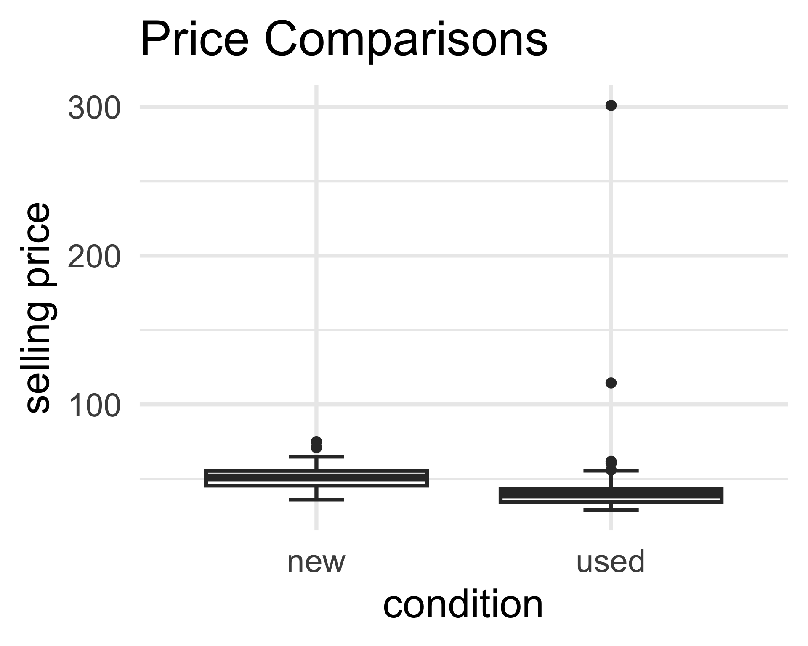
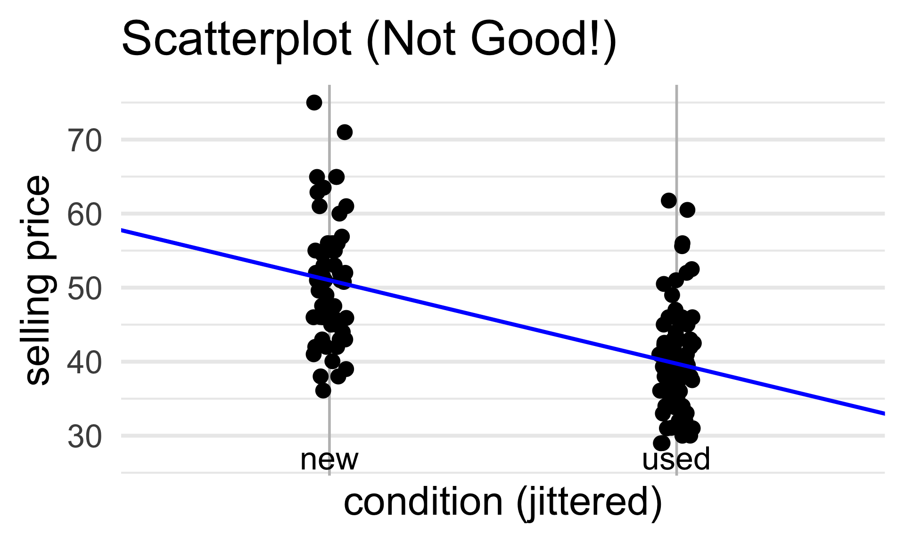
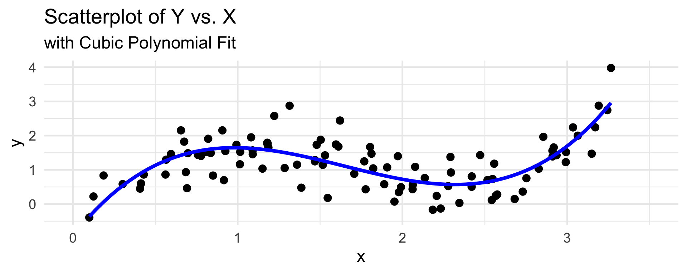
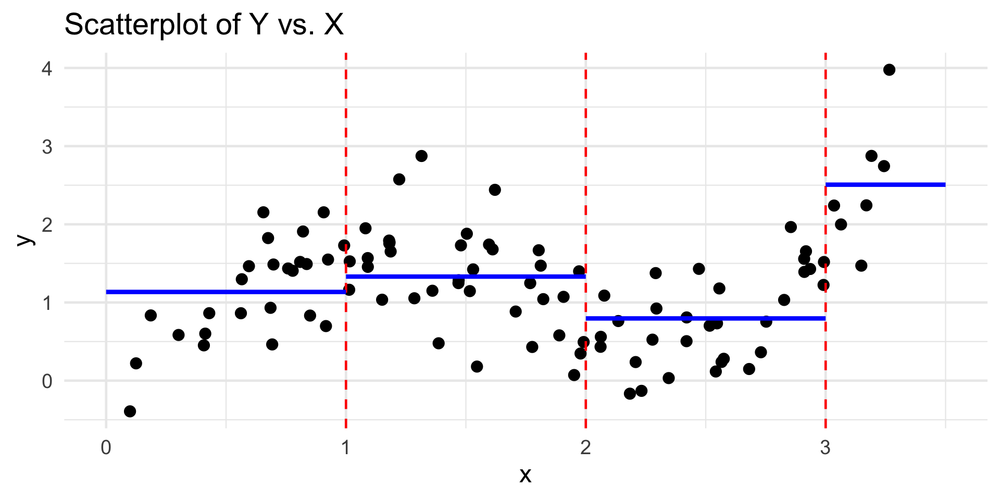
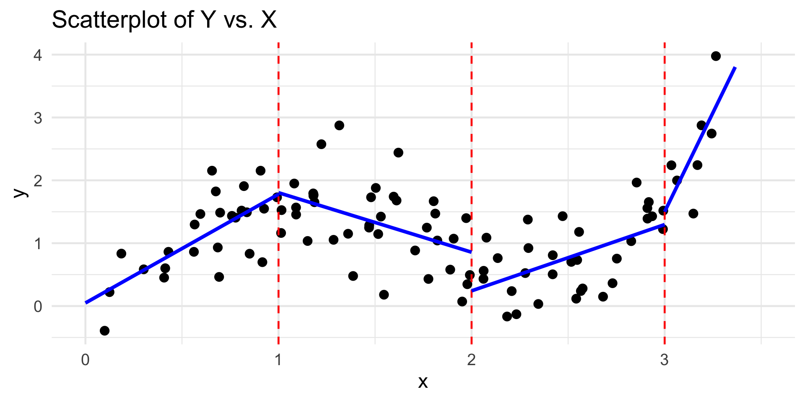
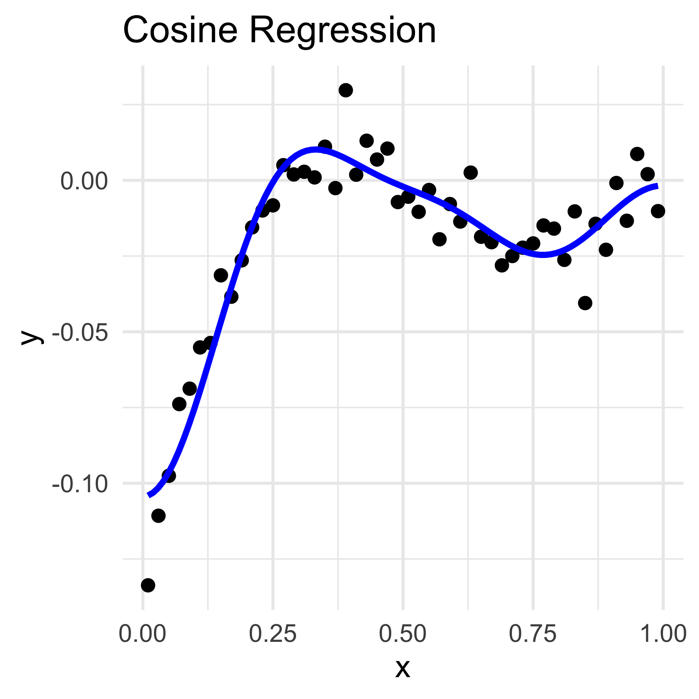

PSTAT 100: Lecture 16
Regression, Part III
Department of Statistics and Applied Probability; UCSB
Summer Session A, 2025
\[ \newcommand\R{\mathbb{R}} \newcommand{\N}{\mathbb{N}} \newcommand{\E}{\mathbb{E}} \newcommand{\Prob}{\mathbb{P}} \newcommand{\F}{\mathcal{F}} \newcommand{\1}{1\!\!1} \newcommand{\comp}[1]{#1^{\complement}} \newcommand{\Var}{\mathrm{Var}} \newcommand{\SD}{\mathrm{SD}} \newcommand{\vect}[1]{\vec{\boldsymbol{#1}}} \newcommand{\tvect}[1]{\vec{\boldsymbol{#1}}^{\mathsf{T}}} \newcommand{\hvect}[1]{\widehat{\boldsymbol{#1}}} \newcommand{\mat}[1]{\mathbf{#1}} \newcommand{\tmat}[1]{\mathbf{#1}^{\mathsf{T}}} \newcommand{\Cov}{\mathrm{Cov}} \DeclareMathOperator*{\argmin}{\mathrm{arg} \ \min} \newcommand{\iid}{\stackrel{\mathrm{i.i.d.}}{\sim}} \]
Categorical Predictors
Mario Kart
- Let’s consider a dataset pertaining to Mario Kart.
- Specifically, this dataset tracks the selling price of used and new copies of Mario Kart for the Nintendo Wii.
| sell_price | cond |
|---|---|
| 47.55 | new |
| 33.05 | used |
| 42 | new |
| 44 | new |
| 71 | new |
| 41 | new |
| 37.02 | used |

Mario Kart
- Let’s remove the two unusually-expensive used copies from our consideration.
- Very likely, these were rare/antique copies which is why they sold for unusually high prices
From our plot, it appears as though, on average, used copies sold for less than new copies.
But how might we model this statistically?
yi = β0 + β1 xi + εi?
Mario Kart
| sell_price | cond |
|---|---|
| 47.55 | new |
| 33.05 | used |
| 42 | new |

By the way, recall that a “scatterplot” is NOT a good plot for this particular dataset - I’m mainly including one to keep things consistent with out treatment of regression from the past few lectures.
47.55 = β0 + β1 (
new) + εi? That doesn’t seem right…The main idea is that our covariate is now categorical (as opposed to numerical). So, we need a new way to encode its observations into our model.
Idea: use indicators!
Mario Kart
| sell_price | cond |
|---|---|
| 47.55 | new |
| 33.05 | used |
| 42 | new |

\[ y_i = \beta_0 + \beta_1 \cdot 1 \! \! 1 \{ \texttt{condition}_i = \texttt{used} \} + \varepsilon_i \]
Mario Kart
| sell_price | cond |
|---|---|
| 47.55 | new |
| 33.05 | used |
| 42 | new |
\[ y_i = \begin{cases} \beta_0 + \beta_1 + \varepsilon_i & \text{if $i^\text{th}$ copy is used} \\ \beta_0 + \varepsilon_i & \text{if $i^\text{th}$ copy is new} \\ \end{cases} \]
- β0 can be interpreted as the average price among new copies
- β0 + β1 can be interpreted as the average price among used copies
- Hence, β1 can be interpreted as the average difference in price between new and used copies of the game
Mario Kart
\[ \widehat{y}_i = \beta_0 + \beta_1 1 \! \! 1\{\texttt{condition}_i = \texttt{used}\} \]
| cond | avg_price |
|---|---|
| new | 51.01 |
| used | 39.74 |
Coefficients:
Estimate Std. Error t value Pr(>|t|)
(Intercept) 51.008 0.995 51.266 < 2e-16 ***
condused -11.271 1.305 -8.639 1.2e-14 ***
- Note: 39.74 - 51.0 = -11.26.
Mario Kart
Before, we used the indicator \(1 \! \! 1 \{ \texttt{condition}_i = \texttt{used} \}\). What happens if we, instead, used the indicator \(1 \! \! 1 \{ \texttt{condition}_i = \texttt{new} \}\)?
Mathematically, our model becomes
\[ y_i = \beta_0 + \beta_1 1 \! \! 1 \{ \texttt{condition}_i = \texttt{new} \} + \varepsilon_i = \begin{cases} \beta_0 + \beta_1 + \varepsilon_i & \text{if $i^\text{th}$ game is new} \\ \beta_0 + \varepsilon_i & \text{if $i^\text{th}$ game is used} \\ \end{cases} \]
- Now, β0 can be interpreted as the average selling price among used copies and β0 + β1 can be interpreted as the average selling price among new copies.
- Then, β1 represents the difference in average selling prices between new and used copies.
- Question: What are the new estimates of the slope and intercept?
Encoding Binary Variables
0/1 Encoding
- In our previous example, our covariate (game condition) was categorical.
- Specifically, it is what we might call binary, since its values are one of only two possibilities (
usedornew).
- Specifically, it is what we might call binary, since its values are one of only two possibilities (
- In the case of a general binary covariate
x, we need to select which level (i.e. category) corresponds to a 0 value in our indicator and which corresponds to a 1 value in our indicator.- The level encoded with a 0 value is called the baseline (aka reference) level.
- The intercept in an SLR will correspond to the average response value within the baseline level.
- It is up to you to set the baseline level; as we saw in Mario Kart example, our choice doesn’t matter too much as long as we are consistent!
Encoding Binary Variables
0/1 Encoding
- In
R, the baseline level is set to whichever level of the factor appears first:
Since
"new"appears as the first level, it was assigned to be the baseline level.If we want to recode the baseline, we can use the
relevel()function:
Encoding Binary Variables
-1/1 Encoding
The framework above is sometimes called 0/1 encoding, as we are using indicators (which output either a 0 or a 1 value).
There is another type of encoding commonly used, called -1/1 encoding.
As the name suggests, instead of assigning 0/1 values to the categories, we assign -1/1 values.
For example, in the Mario Kart example, we might set \[ x_i = \begin{cases} +1 & \text{if the $i^\text{th}$ copy was used} \\ -1 & \text{if the $i^\text{th}$ copy was new} \\ \end{cases} \]
Encoding Binary Variables
-1/1 Encoding
- Then, our model becomes
\[ y_i = \beta_0 + \beta_1 x_i + \varepsilon_i = \begin{cases} \beta_0 + \beta_1 + \varepsilon_i & \text{if $i^\text{th}$ game is used} \\ \beta_0 - \beta_1 - \varepsilon_i & \text{if $i^\text{th}$ game is used} \\ \end{cases} \]
- β0 can be interpreted as the overall average price of game copies (ignoring condition entirely) β1 can be interpreted as the amount over the average that new copies sell for and also the amount under the average that used copies sell for.
Encoding Binary Variables
-1/1 Encoding
mariokart$cond_2 <- ifelse(mariokart$cond == "new", 1, -1)
lm(sell_price ~ cond_2, mariokart) %>% summary()
Call:
lm(formula = sell_price ~ cond_2, data = mariokart)
Residuals:
Min 1Q Median 3Q Max
-14.9078 -5.7366 -0.2266 3.9822 23.9922
Coefficients:
Estimate Std. Error t value Pr(>|t|)
(Intercept) 45.3722 0.6523 69.552 < 2e-16 ***
cond_2 5.6356 0.6523 8.639 1.2e-14 ***
---
Signif. codes: 0 '***' 0.001 '**' 0.01 '*' 0.05 '.' 0.1 ' ' 1
Residual standard error: 7.642 on 139 degrees of freedom
Multiple R-squared: 0.3493, Adjusted R-squared: 0.3447
F-statistic: 74.63 on 1 and 139 DF, p-value: 1.203e-14Encoding Binary Variables
-1/1 Encoding
| cond | avg_price |
|---|---|
| new | 51.01 |
| used | 39.74 |
Encoding Categorical Variables
Multiple Levels
What if we have a covariate with more than two levels?
As an example, let’s return to the
palmerpenguinsdataset- Recall that this particular dataset tracks various characteristics of penguins from the Palmer Research Station in Antarctica
- One variable records the species of each penguin, as either Adélie, Chinstrap, or Gentoo
- As such,
speciesis a categorical variable that has three levels.
- As such,

Encoding Categorical Variables
Palmerpenguins species
| body_mass_g | species |
|---|---|
| 3750 | Adelie |
| 3800 | Adelie |
| 3250 | Adelie |
| NA | Adelie |
| 3450 | Adelie |
\[\begin{align*} y_i & = \beta_0 + \beta_1 1 \! \! 1 \{\texttt{species}_i = \texttt{Adelie}\} + \beta_2 1 \! \! 1 \{\texttt{species}_i = \texttt{Chinstrap}\} \\ & \hspace{15mm} + \beta_3 1 \! \! 1 \{\texttt{species}_i = \texttt{Gentoo}\} + \varepsilon_i \end{align*}\]
- What’s the intercept β0 doing here? (Hint: how many species are there?)
Encoding Categorical Variables
Palmerpenguins species
\[\begin{align*} y_i & = \beta_0 + \beta_1 1 \! \! 1 \{\texttt{species}_i = \texttt{Chinstrap}\} \\ & \hspace{15mm} + \beta_2 1 \! \! 1 \{\texttt{species}_i = \texttt{Gentoo}\} + \varepsilon_i \end{align*}\]
- Here, we’ve set
Adelieto be the baseline level.- Said differently, β0 can now be interpreted as the average body weight of Adélie penguins.
- The slope parameters can now be interpreted as comparisons of species-specific body weights as compared to the average body weight of Adélie penguins.
- E.g. β1 represents the average difference in body weights of Chinstrap penguins as compared with Adélie penguins.
Encoding Categorical Variables
General Case
In general, for a categorical variable with k levels, we will (if we want to use proper indicators to encode values) need only k – 1 slope parameters and one intercept (representing the average response value within the baseline level).
This is often called a set-to-zero condition, as we are explicitly setting one of the parameters (i.e. one of the slope parameters) to be equal to zero.
There exists another type of condition, which we will not discuss in this course (but will arise in future classes, like PSTAT 122).
Your Turn!
Your Turn!
Interpret the following R output:
Call:
lm(formula = body_mass_g ~ species, data = penguins)
Residuals:
Min 1Q Median 3Q Max
-1126.02 -333.09 -33.09 316.91 1223.98
Coefficients:
Estimate Std. Error t value Pr(>|t|)
(Intercept) 3700.66 37.62 98.37 <2e-16 ***
speciesChinstrap 32.43 67.51 0.48 0.631
speciesGentoo 1375.35 56.15 24.50 <2e-16 ***
---
Signif. codes: 0 '***' 0.001 '**' 0.01 '*' 0.05 '.' 0.1 ' ' 1
Residual standard error: 462.3 on 339 degrees of freedom
(2 observations deleted due to missingness)
Multiple R-squared: 0.6697, Adjusted R-squared: 0.6677
F-statistic: 343.6 on 2 and 339 DF, p-value: < 2.2e-1603:00
An Interesting Connection…
| sell_price | cond |
|---|---|
| 47.55 | new |
| 33.05 | used |
| 42 | new |
| 44 | new |
| 71 | new |

\[ y_i = \beta_0 + \beta_1 \cdot 1 \! \! 1 \{ \texttt{condition}_i = \texttt{used} \} + \varepsilon_i \]
An Interesting Connection…
| sell_price | cond |
|---|---|
| 47.55 | new |
| 33.05 | used |
| 42 | new |
| 44 | new |
| 71 | new |
\[ y_i = \beta_0 + \beta_1 \cdot 1 \! \! 1 \{ \texttt{condition}_i = \texttt{used} \} + \varepsilon_i \]
An Interesting Connection…
| sell_price | cond |
|---|---|
| 47.55 | new |
| 33.05 | used |
| 42 | new |
| 44 | new |
| 71 | new |

y = (grand mean) + (deviations from grand mean) + (noise)
This is just ANOVA!
\[ y_{ij} = \mu + \tau_j + \varepsilon_{ij}; \quad i = 1, \cdots, n_j; \ j = 1, 2 \]
An Interesting Connection…
Moral
Regression with categorical variables is equivalent to ANOVA.
ANOVA Tables
This also allows us to address one oustanding issue: that of the output of
aov().Back when we talked about ANOVA, I mentioned we’d discuss the output of
aov()a bit more after we discussed regression.This is because an ANOVA Table is really just a regression table!
Your Turn!
Your Turn!
Using the penguins dataset, regress body mass onto flipper length, flipper depth, species, and sex.
- Should any covariates be removed from the model? Why?
- Produce a regression table and interpret the results. (If you believe a covariate should be removed, produce a regression table for the modified regression fit, after removing the covariate.)
06:00
An Important Distinction
Note that our discussions today have all been about categorical covariates.
We have still been in a regression setting; i.e. assuming that our response is numerical.
The question of how to deal with categorical responses leads us into the realm of classification, which we will start discussing tomorrow.
For now, I’d like to close our our Regression chapter with some extensions.
Series Estimators
Recap
Statistical Model
y = f ( x ) + noise
As mentioned a few lectures ago, in parametric modeling, we decompose the signal into a series of components, each involving a parameter that can be estimated.
For instance, in linear regression, we asserted
yi= β0 + β1xi,1 + … + βpxi,p + εi- Estimating the signal is therefore equivalent to estimating the parameters.
There exist other approaches to regression, some of which we will briefly discuss now.
Polynomial Regression
Recall polynomial regression:
yi= β0 + β1xi+ β2xi2 + … + βpxip + εiPolynomial regression is actually a special case of a broader class of regression techniques, called series estimators (sometimes called basis regression methods).
The idea is that we continue to decompose our signal function into a series of estimable components; now, however, we use a set of orthonormal basis function \(\{\phi_k(t)\}_{k}\): \[ f(x) = \sum_{k = 0}^{p} \beta_k \phi_k(x) \]
Polynomial Regression
- For example, polynomial regression essentially takes \(\phi_k(x) = x^k\)
- Aside: “raw” polynomials (x, x2, etc.) are not orthogonal, so technically we use an orthogonalized version of polynomials (e.g. Legendre polynomials or Hermite polynomials).

Piecewise Regression
Example Data
Piecewise Regression
Piecewise-Constant Regression
Piecewise Regression
Piecewise-Linear Regression
Piecewise Regression
Piecewise-Cubic Regression
Piecewise Regression
Piecewise-Cubic Regression with Boundary Conditions
Piecewise Regression
Splines
- Piecewise-polynomial regression is actually also an example of a series estimator!
- Essentially we take \(\phi_k(x) = x^k \cdot 1 \! \! 1_{\{c_k \leq x < c_{k + 1}\}}\)
- Piecewise-cubic regression with the constraint of being continuous and twice-differentiable at the endpoints is called spline regression. The points at which we divide our data are called knots.
- Again, we won’t cover how to select the location or number of knots; you’ll talk more about this in PSTAT 131/231.
Series Estimators
Trigonometric Regression
- Assuming equally-spaced inputs, we can also propose a class of trigonometric series estimators; for example,
\[ f(x) = \sum_{j=1}^{p} \beta_j \cos[(j - 1) \pi x]\]
- Selection of p can be accomplished with Cross-Validation (out-of-scope for PSTAT 100)

Series Estimators
Kernel Regression
- Inspired by our discussion on Kernel Density Estimation, we can propose a kernel regression estimate:
\[ \widehat{f}(x) = \frac{1}{n \lambda} \sum_{i=1}^{n}\left[ K\left(\frac{x - x_i}{\lambda} \right)y_i \right] \]
- Estimators like these arise frequently in a class like PSTAT 105, and are widely categorized as a nonparametric regression technique.
- Fun Fact: my own research falls within the paradigm of nonparametric regression!
- Essentially, my advisor and I are trying to propose a new nonparametric regression estimator that allows for correlation in the outputs.
Next Time
Tomorrow we’ll begin (and conclude) our discussion on Classification.
Lab 08 (tomorrow’s lab) will walk you through some hands-on explorations of classification.
- As a reminder, if you attend Section in-person tomorrow you will gain access to the solutions to Lab 08 early!
I advise you to keep working through the ICA 02 practice problems as well.

PSTAT 100 - Data Science: Concepts and Analysis, Summer 2025 with Ethan P. Marzban